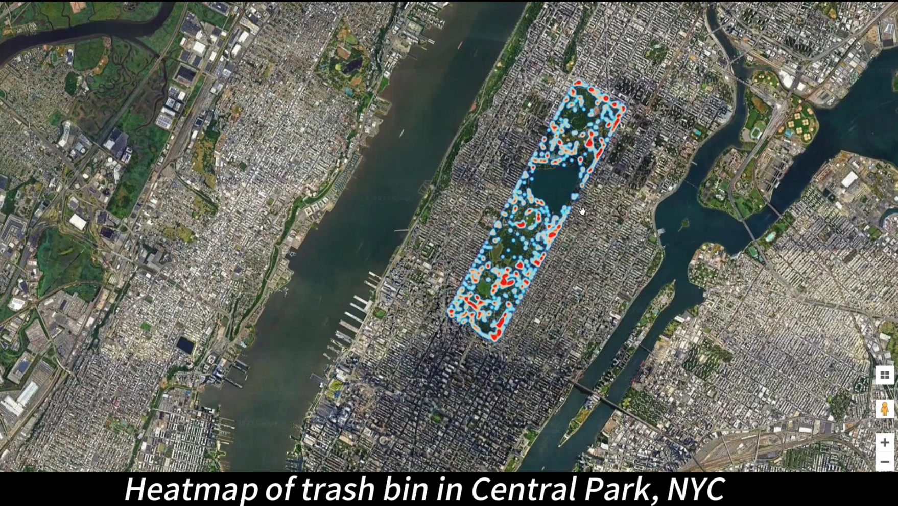
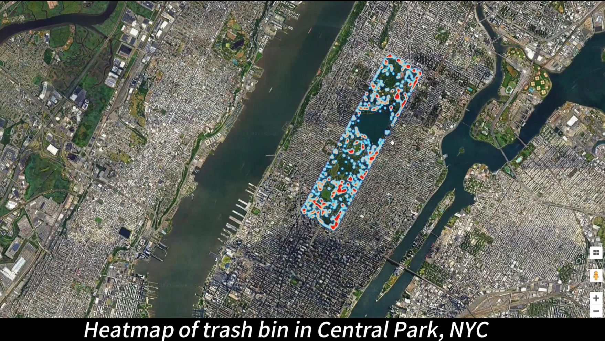

V-ILR: Grounding Virtual Intelligence in Real Life
We build a platform that enables agents to scalably interact with the real-world in a virtual yet realistic environment.

We build a platform that enables agents to scalably interact with the real-world in a virtual yet realistic environment.
There is a sensory gulf between the Earth that humans inhabit and the imaginary, digital realms in which modern AI agents are created. To develop AI agents that can sense, think, and act as flexibly as humans in real-world settings, it's essential to bridge the gap between the digital and physical worlds. How can we embody agents in an environment as rich and diverse as the one we inhabit, without the constraints imposed by real hardware and control? Towards this end, we introduce V-IRL: a platform that enables agents to scalably interact with the real-world in a virtual yet realistic environment. Our platorm serves as a playground for developing agents that can accomplish a variety of practical tasks, and as a vast testbed for measuring progress in capabilities spanning perception, decision-making, and interaction with real-world data spanning the entire globe.
To show the versatility of the V-IRL platform, we use it to instantiate several exemplar agents in our virtual real-world environment. For illustration, we give V-IRL agents character metadata, including an 8-bit avatar, a name, a short bio, and an intention they are trying to accomplish.
Agents in the V-IRL platform inhabit virtual representations of real cities around the globe. At the core of this representation are geographic coordinates corresponding to points on the Earth's surface. Using these coordinates, V-IRL allows agents to ground themselves in the world using maps, real street view imagery, information about nearby destinations, and additional data from arbitrary geospatial APIs

Peng needs to visit several locations throughout the city to get documents signed for registration as a visiting student...
Leveraging Geolocation & Mapping capabilities, Peng saves 7 minutes by walking along the shortest path as opposed to in order waypoint visitation.
To tackle more complex tasks, we follow the pattern of language-driven agents

Peng is starving for some lunch but doesn't know where to eat... Luckily, he met a nice grad student Aria during his errands who might be able to help him find a good spot...
Aria searches for possible restaurants nearby. She then synthesizes public reviews to make final recommendations via GPT-4. As Peng is new to the city and originally from Sichuan, she recommends the spicy Chinese joint Chow House 粤德轩 to give him a taste of home.

Click to check different candidate places:
Peng hires Vivek to help him find an apartment in East Village, Jersey City, or Long Island City for $1k--$3k per month close to a gym, supermarket, and public transit...
Vivek uses real estate APIs to find potential apartments in Peng's desired regions and price range. For each candidate, he researches its proximity to the places Peng cares about. Synthesizing these factors, Vivek provides a holistic rating and accompanying reasoning using GPT-4. His top recommendation is a cost-effective 1 bedroom apartment for $1986/mo, which is close to a supermarket, 2 bus stations, and a gym.

Although language-driven agents can address some real-world tasks using external tools, their reliance on solely text-based information limits their applicability to tasks where visual grounding is required. In contrast, real sensory input is integral to many daily human activities---allowing a deep connection to and understanding of the real world around us. Agents can leverage street view imagery through the V-IRL platform to visually ground themselves in the real world---opening up a wide range of perception-driven tasks.

RX-399 is a state-of-the-art robot agent with advanced navigation and sensing capabilities. Its manufacturer is running a pilot program with sanitation departments in Hong Kong and New York City to assess its readiness for garbage duty...
RX-399 navigates along pre-defined city routes, tagging all trash bins using its open-world detector and geolocation module as depicted in the following figure and videos.

Imani needs to analyze the distribution of trash bins, fire hydrants, and park benches in New York's Central Park for a project with the NYC Parks & Recreation department...
Imani sets routes spanning Central Park and objects of interest for RX-399, who traverses the routes and records all detected instances. After RX-399 finishes its route, Imani analyzes the collected data by RX-399 at different levels of detail.

 


Hiro is starting a new journey in Hong Kong. He decides to explore without a specific destination in mind, looking for a good local lunch spot with food that's not too spicy...
As depicted in the following figure and video, driven by his intention, Hiro uses VQA to select proper roads; uses open-world detection to find a restaurant; uses place reviews and LLM to decide whether a place is suitable for his purpose.

As with previous agents, collaborative agents are designed for specific tasks; however, they can handle objectives beyond their expertise through collaboration with each other.

Ling travels to cities around the world. She seeks out authentic experiences and is always unafraid to ask for help from Locals whenever she finds herself lost...
After obtaining route descriptions from Locals, Ling starts her journey. Grounded in our embodied platform, Ling can adjust her pose and identify visual landmarks along the streets using open-world recognition and her map. Recognizing these landmarks helps GPT-4 to make correct decisions about where to turn direction, move forward and stop. Concrete examples are shown in the following figure and videos.
Grounded in the same real-world as humans, agents are also capable of collaborating with humans to serve as assistants.

As a university student in NYC, you're excited to spend a day exploring lesser-known and tranquil places. Your friend recommended Diego, who is known for his professionalism in planning practical and personalized itineraries...
As depicted in the following figure, Diego's itinerary is tailored to your needs. Diego not only considers your physical and mental interoception status, budget for each activity, but also anticipates your status changes and cost when you follow each event. He is able to take into account real travel times from the V-IRL platform and select suitable dining options by collaborating with another restaurant recommendation agent.

As shown in the following figure, you can intervene Diego's planning process by adjusting your interoception status or providing verbal feedback for Diego. In response, Diego promptly revises his original plan to make it accommodate your demands, and re-estimate your state changes after revision.

Additionally, grounded on tightly related street views and Map in V-IRL, Diego travels places in his itinerary to scout for potential scenic viewpoints for you as shown in the following figure. He uses VQA to assess each captured views, attaching highly rated positions to your itinerary.

This section introduces our system's core: a platform designed for perception-driven agents that transforms real-world cities around the world into a vast virtual playground where agents can be constructed to solve practical tasks. At its heart, V-IRL is comprised of a hierarchical architecture. The platform lies at the foundation---providing the underlying components and infrastructure for agents to employ. Higher level capabilities of Perception, Reasoning, Action, and Collaboration emerge from the platform's components. Finally, agents leverage these capabilities and user-defined metadata in task-specific routines to solve tasks.
Click interested modules to see explanations:

The essential attributes of V-IRL include its ability to access geographically diverse data derived from real-world sensory input, and its API that facilitates interaction with Google Map Platform (GMP)
Motivation: Every day, humans traverse through cities, moving between diverse places to fulfil a range of goals, like the Intentional Explorer agent. We assess the performance of vision models on the everyday human activity place localization using street view imagery and associated place data.
Setups: We modify RX-399 agent to traverse polygonal areas while localizing & identifying 20 types of places.
We evaluate three prominent open-world detection models: GroundingDINO
Results: Following table shows that open-world detectors like GroundingDINO school, cafe, and convenience store, respectively.
In contrast, CLIP (w/ GLIP proposal) can identify a broader spectrum of place types.
This is mainly caused by the category bias in object detection datasets with a limited vocabulary.
Hence, even if detectors like Owl-ViT are initialized with CLIP, their vocabulary space narrows down due to fine-tuning.
These results suggest that cascading category-agnostic object proposals to zero-shot recognizers appears promising for "real" open-world localization, especially for less common categories in object detection datasets.

Motivation: In contrast to the challenging V-IRL place localization task on street view imagery, in real life, humans can recognize businesses by taking a closer, place-centric look. In this regard, we assess existing vision models on two perception tasks based on place-centric images: i) recognizing specific place types; ii) identifying human intentions by Vision Question Answering (VQA), named intention VQA.
Setups: For recognition, we assess 10 open-world recognition models, for place type recognition from 96 options, using place-centric images (see below imagery illustration).

For intention VQA, we also evaluate 8 multi-modal large language models (MM-LLM) to determine viable human intentions from a four-option multiple-choice VQA. The V-IRL Place VQA process is illustrated in following image, where the candidate and true choices are generated by GPT-4
Results: Following table shows that CLIP (L/14@336px) outperforms even the biggest version of Eva-02-CLIP and SigLIP in the V-IRL Place recognition task, emphasizing the high-quality data of CLIP.
The bottom of the table shows that in the intention VQA,
BLIP2
Motivation: As discussed in the V-IRL agents section, Intentional Explorer and Tourist agents require collaboration between vision models and language models to accomplish complex tasks. Therefore, this motivates us to investigate the performance of vision-language collaboration, with environmental information acquired through visual perception models from real-world images. This prompts us to build an embodied task for jointly leveraging vision and language models along with the realistic street views in V-IRL. In this regard, we build this V-IRL Vision Language Navigation (VLN) benchmark.
Setups: We adapt the Tourist agent implementation and replace its recognition component with the various benchmarked models. These methods are tasked to identify visual landmarks during navigation. Subsequently, GPT-4
Four approaches are evaluated to recognize landmarks during navigation: (i) Approximate oracle by searching nearby landmarks; (ii) Zero-shot recognizers CLIP
Results: Following table shows that, with oracle landmark information, powerful LLMs can impressively comprehend navigation instructions and thus make accurate decisions. However, when using vision models to fetch landmark information from street views, the success rate drops dramatically, suggesting that the perception of vision models is noisy and misguides LLMs' decision making. Among these recognizers, larger variants of CLIP
Spanning 12 cities across the globe, our V-IRL benchmarks provide an opportunity to analyze the inherent model biases in different regions. As depicted in the following figure, vision models demonstrate subpar performance on all three benchmark tasks in Lagos, Tokyo, Hong Kong, and Buenos Aires. In Lagos, vision models might struggle due to its non-traditional street views relative to more developed cities (see street views in aside figures). For cities like Tokyo, Hong Kong and Buenos Aires, an intriguing observation is their primary use of non-English languages in street views. This suggests that existing vision models face challenges with multilingual image data.

@article{VIRL,
title={V-IRL: Grounding Virtual Intelligence in Real Life},
author={Yang, Jihan and Ding, Runyu and Brown, Ellis and Qi, Xiaojuan and Xie, Saining},
year={2023},
journal={arXiv preprint arXiv:2312},
}